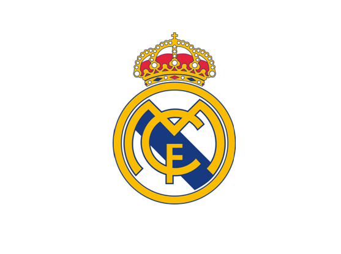

Real Madrid Club de Fútbol (Spanish pronunciation: [reˈal maˈðɾið ˈkluβ ðe ˈfuðβol] ⓘ) is a Spanish professional
association football club based in Madrid The club competes in
La Liga the top tier of Spanish football.
Founded in 1902 as Madrid Football Club, the club has traditionally worn a white home kit. The honorific title 'Real' is Spanish for "Royal"
and was bestowed by Alfonso XIII in 1920. Real Madrid have played their home matches in the Bernabéu since 1947. Unlike most European sporting clubs, Real Madrid's members
have owned and operated the club throughout its history. The club is one of the most widely supported in the world and the most followed sports club across social media.[9][10] It was
estimated to be worth $6.6 billion in 2024, making it the world's most valuable football club.[11] In 2024, it became the first football club to make €1 billion ($1.08bn) in revenue.[12]
The club anthem is the "Hala Madrid y nada más". [13] Real Madrid is one of the most successful football clubs in the world and the most decorated club in Europe. In Spanish domestic
football, the club has won 71 trophies; a record 36 La Liga titles, 20 Copa del Rey 13 Supercopa de España, a Copa Eva Duarte and a Copa de La Liga.[14] In International football, Real
Madrid have won a record 35 trophies: a record 15 European Cup/ Champions league titles, a record six UEFA Super Cups, two UEFA Cups, a joint-record two Latin Cups, a record one
Iberoamerican Cup, and a record nine world championships.[note 1] Madrid has been ranked joint first a record number of times in the IFFHS Club World Ranking.[18] In UEFA's club
ranking, Madrid ranks first in the all-time club ranking.[19][20]
